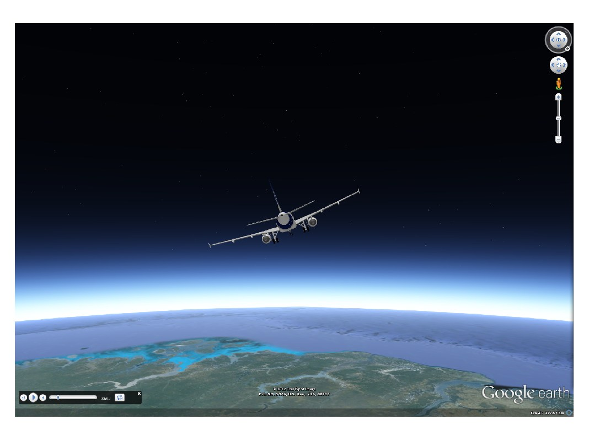

kml.modelTour
Animates a 3D model in the coordinates defined by longitude, latitude and altitude, and orientation given by heading, tilt and roll.
Contents
Syntax
kml.modelTour(time, longitude, latitude, altitude, heading, tilt, roll) kml.modelTour(...,'PropertyName',PropertyValue,...)
Description
Animats a 3D model in the coordinates defined by the inputs longitude, latitude and altitude, and orientation given by heading, tilt and roll, with the duration of the animation controlled by the time input. The 3D model should be specified by the property pair 'model', 'modelfile.dae' and should be located in the same path where the kml file will be saved.
The units for the angular values are normally given in degrees, but this can be changed by calling: kml.useDegrees; or kml.useRadians; before plotting. Altitude is always given in meters.
Many user-generated models can be found in the Google 3D Warehouse website.
It is possible to fine tune the point properties using name-value pairs:
kml.modelTour(...,'PropertyName',PropertyValue,...)
Properties
| Property Name | Type | Description |
|---|---|---|
| 'model' | string | Path to the 3D model file. This is a required input. |
| 'name' | string | Name of the model inside the kml file |
| 'tourName' | string | Name of the animated tour inside the kml file |
| 'cameraMode' | string | Choose if the camera will fly behind the 3D model, above, or will be fixed above in one place. Valid inputs: 'behind', 'above', 'fixed' |
| 'cameraDistance' | double | Controls how far the camera will be placed behind/above the animated 3D model. This input should be tested with different order of magnitude values, until the desired effect is achieved. |
| 'id' | string | Internal id of this model inside the kml |
| 'description' | string | A short description of what the model represents |
| 'visibility' | true/false | Control the initial visibility of the model |
| 'scale' | double | Defines a scale factor to be applied to the model. Can be one input for all models, or an array with the same size as Longitude, with the size of the model at each coordinate |
| 'scaleX' | double | Defines a scale factor to be applied to the model in the x-axis. Can be one input for all models, or an array with the same size as Longitude, with the size of the model at each coordinate |
| 'scaleY' | double | Defines a scale factor to be applied to the model in the y-axis. Can be one input for all models, or an array with the same size as Longitude, with the size of the model at each coordinate |
| 'scaleZ' | double | Defines a scale factor to be applied to the model in the z-axis. Can be one input for all models, or an array with the same size as Longitude, with the size of the model at each coordinate |
| 'altitudeMode' | string | Choose if the altitude value is absolute to the earth model, relative to the ground level, or should be clamped to the ground. Valid inputs: 'absolute', 'relativeToGround', 'clampToGround' |
Example
% Create a new kml object k = kml('my kml file'); % Creates an animated flight trajectory of an A320. t = linspace(0,4*pi,1000); long = cos(t)*20; lat = sin(t)*20; alt = 100000 + 0.*t; heading = 360-mod((t+pi)*180/pi,720); tilt = 0.*t; roll = 0.*t -20; k.modelTour(t,long,lat,alt,heading,tilt,roll,'model','A320.dae','scale',100,'cameraMode','behind','cameraDistance',1e5) % Save the kml and open it in Google Earth k.run; pause
This is the result of running this example:
This file is part of the kml toolbox. Copyright 2012 Rafael Fernandes de Oliveira (rafael@rafael.aero)